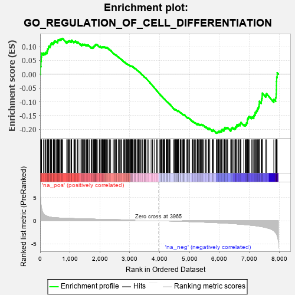
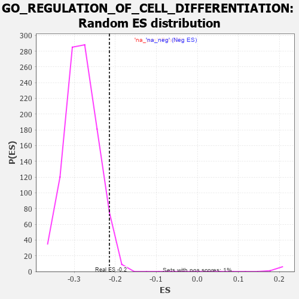

| | | Dataset | 7d |
| Phenotype | NoPhenotypeAvailable |
| Upregulated in class | na_neg |
| GeneSet | GO_REGULATION_OF_CELL_DIFFERENTIATION |
| Enrichment Score (ES) | -0.21440902 |
| Normalized Enrichment Score (NES) | -0.7574499 |
| Nominal p-value | 0.96374625 |
| FDR q-value | 0.99527353 |
| FWER p-Value | 1.0 |
Table: GSEA Results Summary

Fig 1: Enrichment plot: GO_REGULATION_OF_CELL_DIFFERENTIATION
Profile of the Running ES Score & Positions of GeneSet Members on the Rank Ordered List
| PROBE | GENE SYMBOL | GENE_TITLE | RANK IN GENE LIST | RANK METRIC SCORE | RUNNING ES | CORE ENRICHMENT | | 1 | SYT2 | | | 8 | 5.577 | 0.0293 | No |
| 2 | ABCA5 | | | 29 | 3.799 | 0.0473 | No |
| 3 | SIX2 | | | 40 | 3.152 | 0.0631 | No |
| 4 | TGFB3 | | | 49 | 2.654 | 0.0765 | No |
| 5 | DISP3 | | | 110 | 1.525 | 0.0768 | No |
| 6 | SPI1 | | | 162 | 1.182 | 0.0766 | No |
| 7 | RORB | | | 189 | 1.097 | 0.0791 | No |
| 8 | RHOH | | | 228 | 0.987 | 0.0795 | No |
| 9 | SMAD5 | | | 231 | 0.979 | 0.0845 | No |
| 10 | INSM1 | | | 250 | 0.939 | 0.0873 | No |
| 11 | LBX1 | | | 254 | 0.929 | 0.0919 | No |
| 12 | HGF | | | 276 | 0.870 | 0.0939 | No |
| 13 | SOX14 | | | 278 | 0.859 | 0.0984 | No |
| 14 | SHOX2 | | | 288 | 0.842 | 0.1018 | No |
| 15 | WEE2 | | | 333 | 0.766 | 0.1002 | No |
| 16 | DLL1 | | | 337 | 0.760 | 0.1039 | No |
| 17 | GSK3A | | | 351 | 0.745 | 0.1063 | No |
| 18 | ARNT | | | 357 | 0.741 | 0.1096 | No |
| 19 | SOX13 | | | 380 | 0.717 | 0.1106 | No |
| 20 | AXIN2 | | | 383 | 0.713 | 0.1142 | No |
| 21 | RRN3 | | | 438 | 0.667 | 0.1108 | No |
| 22 | SUFU | | | 443 | 0.665 | 0.1138 | No |
| 23 | LEO1 | | | 463 | 0.655 | 0.1149 | No |
| 24 | LRP1 | | | 470 | 0.648 | 0.1176 | No |
| 25 | CDC20 | | | 480 | 0.644 | 0.1199 | No |
| 26 | MYOD1 | | | 504 | 0.628 | 0.1203 | No |
| 27 | SRF | | | 542 | 0.615 | 0.1188 | No |
| 28 | DDX56 | | | 584 | 0.600 | 0.1167 | No |
| 29 | ALX1 | | | 590 | 0.598 | 0.1193 | No |
| 30 | PITX3 | | | 594 | 0.596 | 0.1221 | No |
| 31 | FBXW8 | | | 601 | 0.594 | 0.1245 | No |
| 32 | TAF8 | | | 622 | 0.587 | 0.1251 | No |
| 33 | RBM4 | | | 649 | 0.576 | 0.1248 | No |
| 34 | HES5 | | | 661 | 0.571 | 0.1265 | No |
| 35 | XRCC6 | | | 694 | 0.560 | 0.1253 | No |
| 36 | FST | | | 698 | 0.560 | 0.1279 | No |
| 37 | ID1 | | | 719 | 0.555 | 0.1283 | No |
| 38 | WDR61 | | | 734 | 0.549 | 0.1295 | No |
| 39 | SETD3 | | | 754 | 0.544 | 0.1299 | No |
| 40 | HMGB2 | | | 892 | 0.507 | 0.1147 | No |
| 41 | HDAC5 | | | 900 | 0.506 | 0.1165 | No |
| 42 | NSUN2 | | | 901 | 0.506 | 0.1192 | No |
| 43 | SF3A2 | | | 928 | 0.500 | 0.1185 | No |
| 44 | PDCD4 | | | 941 | 0.497 | 0.1196 | No |
| 45 | CTR9 | | | 964 | 0.492 | 0.1194 | No |
| 46 | DVL3 | | | 971 | 0.490 | 0.1213 | No |
| 47 | MEN1 | | | 1003 | 0.483 | 0.1198 | No |
| 48 | AKT1 | | | 1040 | 0.476 | 0.1177 | No |
| 49 | YAP1 | | | 1041 | 0.475 | 0.1203 | No |
| 50 | MEF2C | | | 1054 | 0.473 | 0.1213 | No |
| 51 | RBM15 | | | 1057 | 0.473 | 0.1236 | No |
| 52 | KMT2A | | | 1130 | 0.458 | 0.1166 | No |
| 53 | EMX1 | | | 1143 | 0.455 | 0.1175 | No |
| 54 | PSMD7 | | | 1152 | 0.454 | 0.1189 | No |
| 55 | RFX3 | | | 1171 | 0.451 | 0.1190 | No |
| 56 | PSMD2 | | | 1181 | 0.450 | 0.1202 | No |
| 57 | KAT7 | | | 1240 | 0.440 | 0.1150 | No |
| 58 | WDR36 | | | 1260 | 0.437 | 0.1149 | No |
| 59 | CDC73 | | | 1265 | 0.436 | 0.1167 | No |
| 60 | NKAP | | | 1337 | 0.422 | 0.1097 | No |
| 61 | FKBP4 | | | 1390 | 0.412 | 0.1050 | No |
| 62 | DOCK7 | | | 1398 | 0.410 | 0.1064 | No |
| 63 | NOCT | | | 1402 | 0.409 | 0.1082 | No |
| 64 | CARM1 | | | 1413 | 0.408 | 0.1091 | No |
| 65 | PTBP1 | | | 1441 | 0.402 | 0.1077 | No |
| 66 | VASN | | | 1459 | 0.398 | 0.1076 | No |
| 67 | TIMP2 | | | 1478 | 0.394 | 0.1074 | No |
| 68 | IFRD1 | | | 1486 | 0.392 | 0.1086 | No |
| 69 | WDFY2 | | | 1522 | 0.388 | 0.1061 | No |
| 70 | SOS1 | | | 1547 | 0.384 | 0.1051 | No |
| 71 | CNTN4 | | | 1571 | 0.379 | 0.1041 | No |
| 72 | FZD1 | | | 1574 | 0.379 | 0.1059 | No |
| 73 | PAF1 | | | 1588 | 0.376 | 0.1062 | No |
| 74 | RNF6 | | | 1605 | 0.373 | 0.1061 | No |
| 75 | ESRP1 | | | 1653 | 0.364 | 0.1019 | No |
| 76 | TRAK1 | | | 1714 | 0.354 | 0.0959 | No |
| 77 | MEIS1 | | | 1723 | 0.351 | 0.0968 | No |
| 78 | KMT2E | | | 1730 | 0.350 | 0.0979 | No |
| 79 | PTBP3 | | | 1763 | 0.344 | 0.0956 | No |
| 80 | LLPH | | | 1768 | 0.343 | 0.0969 | No |
| 81 | LRP5 | | | 1769 | 0.342 | 0.0988 | No |
| 82 | STRAP | | | 1793 | 0.339 | 0.0976 | No |
| 83 | THOC2 | | | 1796 | 0.338 | 0.0992 | No |
| 84 | FNIP1 | | | 1798 | 0.338 | 0.1009 | No |
| 85 | PSMD4 | | | 1811 | 0.335 | 0.1011 | No |
| 86 | FMR1 | | | 1816 | 0.334 | 0.1024 | No |
| 87 | RNF10 | | | 1833 | 0.331 | 0.1021 | No |
| 88 | GATA4 | | | 1837 | 0.330 | 0.1035 | No |
| 89 | PTPRQ | | | 1839 | 0.330 | 0.1051 | No |
| 90 | TCF7 | | | 1848 | 0.328 | 0.1059 | No |
| 91 | PSMD6 | | | 1858 | 0.326 | 0.1065 | No |
| 92 | SMAD4 | | | 1860 | 0.326 | 0.1081 | No |
| 93 | RBBP5 | | | 1875 | 0.323 | 0.1080 | No |
| 94 | PAK3 | | | 1889 | 0.322 | 0.1080 | No |
| 95 | DDX6 | | | 1915 | 0.318 | 0.1065 | No |
| 96 | BRSK2 | | | 1979 | 0.308 | 0.0999 | No |
| 97 | ROR1 | | | 1993 | 0.306 | 0.0998 | No |
| 98 | FOXO4 | | | 2004 | 0.304 | 0.1002 | No |
| 99 | RAF1 | | | 2011 | 0.303 | 0.1010 | No |
| 100 | IRF4 | | | 2054 | 0.298 | 0.0971 | No |
| 101 | MEIS2 | | | 2063 | 0.296 | 0.0977 | No |
| 102 | KDM3A | | | 2078 | 0.294 | 0.0974 | No |
| 103 | LRRC7 | | | 2080 | 0.294 | 0.0989 | No |
| 104 | LSM1 | | | 2098 | 0.291 | 0.0982 | No |
| 105 | BMP7 | | | 2107 | 0.290 | 0.0987 | No |
| 106 | ISLR2 | | | 2124 | 0.287 | 0.0982 | No |
| 107 | PSME4 | | | 2143 | 0.285 | 0.0974 | No |
| 108 | ATOH8 | | | 2145 | 0.285 | 0.0988 | No |
| 109 | CNOT4 | | | 2161 | 0.283 | 0.0984 | No |
| 110 | SYK | | | 2186 | 0.278 | 0.0967 | No |
| 111 | C1QBP | | | 2189 | 0.278 | 0.0980 | No |
| 112 | OTP | | | 2209 | 0.275 | 0.0969 | No |
| 113 | MYLIP | | | 2225 | 0.272 | 0.0965 | No |
| 114 | CREB1 | | | 2243 | 0.269 | 0.0957 | No |
| 115 | PSMF1 | | | 2251 | 0.268 | 0.0962 | No |
| 116 | REST | | | 2308 | 0.259 | 0.0902 | No |
| 117 | SCRT1 | | | 2323 | 0.257 | 0.0898 | No |
| 118 | SIN3A | | | 2361 | 0.251 | 0.0863 | No |
| 119 | KDM1A | | | 2447 | 0.237 | 0.0764 | No |
| 120 | ZC3H8 | | | 2486 | 0.229 | 0.0726 | No |
| 121 | KAT2B | | | 2502 | 0.226 | 0.0719 | No |
| 122 | NUMB | | | 2519 | 0.224 | 0.0710 | No |
| 123 | ST7 | | | 2552 | 0.220 | 0.0680 | No |
| 124 | PSMD5 | | | 2560 | 0.218 | 0.0682 | No |
| 125 | RTF2 | | | 2615 | 0.210 | 0.0623 | No |
| 126 | ETV4 | | | 2621 | 0.209 | 0.0628 | No |
| 127 | MITF | | | 2659 | 0.205 | 0.0590 | No |
| 128 | DSCAM | | | 2689 | 0.200 | 0.0563 | No |
| 129 | SLIT2 | | | 2724 | 0.195 | 0.0529 | No |
| 130 | RORA | | | 2730 | 0.193 | 0.0533 | No |
| 131 | AQP3 | | | 2796 | 0.184 | 0.0457 | No |
| 132 | SYAP1 | | | 2811 | 0.182 | 0.0448 | No |
| 133 | PA2G4 | | | 2840 | 0.177 | 0.0421 | No |
| 134 | NR2E1 | | | 2844 | 0.177 | 0.0427 | No |
| 135 | WDR5 | | | 2892 | 0.168 | 0.0374 | No |
| 136 | FGFR2 | | | 2895 | 0.167 | 0.0381 | No |
| 137 | ZC4H2 | | | 2907 | 0.164 | 0.0375 | No |
| 138 | ACVR1 | | | 2932 | 0.161 | 0.0352 | No |
| 139 | CDK13 | | | 2944 | 0.158 | 0.0346 | No |
| 140 | RAB17 | | | 2950 | 0.157 | 0.0348 | No |
| 141 | BTK | | | 2958 | 0.156 | 0.0348 | No |
| 142 | NELFB | | | 2979 | 0.153 | 0.0330 | No |
| 143 | SMYD1 | | | 2998 | 0.150 | 0.0314 | No |
| 144 | ULK4 | | | 3022 | 0.146 | 0.0292 | No |
| 145 | WNT4 | | | 3023 | 0.146 | 0.0300 | No |
| 146 | LEF1 | | | 3037 | 0.144 | 0.0290 | No |
| 147 | UFL1 | | | 3041 | 0.144 | 0.0294 | No |
| 148 | SRRT | | | 3050 | 0.143 | 0.0291 | No |
| 149 | FEZ1 | | | 3055 | 0.142 | 0.0294 | No |
| 150 | KEAP1 | | | 3063 | 0.141 | 0.0292 | No |
| 151 | MAP2 | | | 3074 | 0.140 | 0.0287 | No |
| 152 | HDAC1 | | | 3086 | 0.138 | 0.0280 | No |
| 153 | CUL4A | | | 3097 | 0.137 | 0.0274 | No |
| 154 | RREB1 | | | 3099 | 0.137 | 0.0280 | No |
| 155 | TLX3 | | | 3140 | 0.131 | 0.0235 | No |
| 156 | GCNT2 | | | 3162 | 0.128 | 0.0214 | No |
| 157 | PAX6 | | | 3170 | 0.127 | 0.0212 | No |
| 158 | PSMD9 | | | 3179 | 0.125 | 0.0208 | No |
| 159 | TRIO | | | 3192 | 0.123 | 0.0199 | No |
| 160 | TWF1 | | | 3199 | 0.123 | 0.0198 | No |
| 161 | FADS1 | | | 3242 | 0.114 | 0.0149 | No |
| 162 | PUS7 | | | 3254 | 0.113 | 0.0140 | No |
| 163 | CTDP1 | | | 3279 | 0.109 | 0.0114 | No |
| 164 | TRIP4 | | | 3290 | 0.107 | 0.0107 | No |
| 165 | SMAD3 | | | 3303 | 0.105 | 0.0097 | No |
| 166 | PARP2 | | | 3316 | 0.103 | 0.0087 | No |
| 167 | SMAD1 | | | 3337 | 0.099 | 0.0066 | No |
| 168 | SMAD7 | | | 3369 | 0.093 | 0.0030 | No |
| 169 | MED1 | | | 3405 | 0.089 | -0.0011 | No |
| 170 | KIF1A | | | 3415 | 0.088 | -0.0018 | No |
| 171 | SARM1 | | | 3432 | 0.086 | -0.0035 | No |
| 172 | CDK5 | | | 3480 | 0.080 | -0.0092 | No |
| 173 | GLI1 | | | 3489 | 0.079 | -0.0098 | No |
| 174 | FES | | | 3501 | 0.077 | -0.0109 | No |
| 175 | PQBP1 | | | 3526 | 0.072 | -0.0136 | No |
| 176 | NELL1 | | | 3538 | 0.070 | -0.0147 | No |
| 177 | PIN1 | | | 3543 | 0.069 | -0.0148 | No |
| 178 | KMT2C | | | 3544 | 0.069 | -0.0145 | No |
| 179 | STK25 | | | 3602 | 0.059 | -0.0217 | No |
| 180 | HES2 | | | 3631 | 0.055 | -0.0250 | No |
| 181 | NF1 | | | 3713 | 0.040 | -0.0355 | No |
| 182 | SKI | | | 3762 | 0.032 | -0.0416 | No |
| 183 | SUCO | | | 3816 | 0.025 | -0.0485 | No |
| 184 | NIPBL | | | 3900 | 0.010 | -0.0593 | No |
| 185 | NRG3 | | | 3925 | 0.005 | -0.0625 | No |
| 186 | EYA1 | | | 3987 | -0.006 | -0.0705 | No |
| 187 | PARP1 | | | 4014 | -0.010 | -0.0738 | No |
| 188 | VEZF1 | | | 4033 | -0.013 | -0.0761 | No |
| 189 | TAL1 | | | 4064 | -0.018 | -0.0800 | No |
| 190 | SFRP2 | | | 4065 | -0.018 | -0.0799 | No |
| 191 | ROBO2 | | | 4066 | -0.018 | -0.0798 | No |
| 192 | CSF1 | | | 4074 | -0.019 | -0.0806 | No |
| 193 | WNT2 | | | 4084 | -0.021 | -0.0817 | No |
| 194 | MTOR | | | 4114 | -0.025 | -0.0854 | No |
| 195 | ABL1 | | | 4125 | -0.027 | -0.0865 | No |
| 196 | CRK | | | 4139 | -0.031 | -0.0881 | No |
| 197 | CDK12 | | | 4148 | -0.033 | -0.0889 | No |
| 198 | DDX17 | | | 4161 | -0.035 | -0.0903 | No |
| 199 | GFI1 | | | 4168 | -0.037 | -0.0909 | No |
| 200 | UNC5D | | | 4217 | -0.044 | -0.0970 | No |
| 201 | ARPC2 | | | 4232 | -0.047 | -0.0986 | No |
| 202 | GPC1 | | | 4238 | -0.048 | -0.0990 | No |
| 203 | GAK | | | 4249 | -0.050 | -0.1000 | No |
| 204 | PCID2 | | | 4258 | -0.051 | -0.1008 | No |
| 205 | PSME3 | | | 4280 | -0.056 | -0.1033 | No |
| 206 | WNT11 | | | 4282 | -0.056 | -0.1031 | No |
| 207 | SYT17 | | | 4310 | -0.061 | -0.1063 | No |
| 208 | CD109 | | | 4325 | -0.064 | -0.1078 | No |
| 209 | OPA1 | | | 4330 | -0.065 | -0.1080 | No |
| 210 | FIG4 | | | 4348 | -0.068 | -0.1098 | No |
| 211 | LRRK2 | | | 4467 | -0.087 | -0.1249 | No |
| 212 | MEF2A | | | 4499 | -0.095 | -0.1285 | No |
| 213 | MOB2 | | | 4504 | -0.095 | -0.1285 | No |
| 214 | ILK | | | 4510 | -0.096 | -0.1286 | No |
| 215 | SNW1 | | | 4514 | -0.096 | -0.1285 | No |
| 216 | WNT5B | | | 4517 | -0.098 | -0.1282 | No |
| 217 | NPTN | | | 4519 | -0.098 | -0.1278 | No |
| 218 | RIN2 | | | 4535 | -0.101 | -0.1292 | No |
| 219 | NTRK2 | | | 4543 | -0.104 | -0.1296 | No |
| 220 | ABI2 | | | 4554 | -0.106 | -0.1303 | No |
| 221 | APC | | | 4558 | -0.107 | -0.1301 | No |
| 222 | SGPP1 | | | 4573 | -0.112 | -0.1314 | No |
| 223 | SYT4 | | | 4590 | -0.116 | -0.1329 | No |
| 224 | GATA3 | | | 4614 | -0.120 | -0.1352 | No |
| 225 | ATOH1 | | | 4615 | -0.121 | -0.1346 | No |
| 226 | DLG5 | | | 4619 | -0.121 | -0.1343 | No |
| 227 | RAB21 | | | 4620 | -0.122 | -0.1336 | No |
| 228 | SPEN | | | 4621 | -0.122 | -0.1330 | No |
| 229 | SDK1 | | | 4627 | -0.124 | -0.1330 | No |
| 230 | LMX1A | | | 4631 | -0.124 | -0.1327 | No |
| 231 | LIMK1 | | | 4684 | -0.136 | -0.1388 | No |
| 232 | PTK7 | | | 4687 | -0.136 | -0.1383 | No |
| 233 | ARF6 | | | 4704 | -0.140 | -0.1397 | No |
| 234 | LHX2 | | | 4716 | -0.143 | -0.1403 | No |
| 235 | FBLN1 | | | 4748 | -0.149 | -0.1436 | No |
| 236 | PIM1 | | | 4776 | -0.152 | -0.1463 | No |
| 237 | RTN4 | | | 4783 | -0.154 | -0.1463 | No |
| 238 | TERT | | | 4801 | -0.157 | -0.1477 | No |
| 239 | TNIK | | | 4804 | -0.158 | -0.1471 | No |
| 240 | P2RX4 | | | 4813 | -0.161 | -0.1473 | No |
| 241 | FBXW7 | | | 4816 | -0.161 | -0.1466 | No |
| 242 | WDR1 | | | 4824 | -0.163 | -0.1467 | No |
| 243 | MARK2 | | | 4899 | -0.177 | -0.1555 | No |
| 244 | SUZ12 | | | 4931 | -0.185 | -0.1585 | No |
| 245 | FZD4 | | | 4940 | -0.186 | -0.1586 | No |
| 246 | EP300 | | | 4941 | -0.186 | -0.1576 | No |
| 247 | XRCC5 | | | 4946 | -0.187 | -0.1571 | No |
| 248 | PRKDC | | | 4955 | -0.189 | -0.1571 | No |
| 249 | PROM1 | | | 4996 | -0.197 | -0.1613 | No |
| 250 | KLF4 | | | 5005 | -0.198 | -0.1613 | No |
| 251 | DRD2 | | | 5088 | -0.221 | -0.1708 | No |
| 252 | ITSN1 | | | 5094 | -0.222 | -0.1703 | No |
| 253 | MMP9 | | | 5108 | -0.227 | -0.1708 | No |
| 254 | FLCN | | | 5140 | -0.235 | -0.1736 | No |
| 255 | TBX1 | | | 5166 | -0.241 | -0.1756 | No |
| 256 | HDAC6 | | | 5183 | -0.244 | -0.1763 | No |
| 257 | SMO | | | 5195 | -0.247 | -0.1764 | No |
| 258 | FOXJ2 | | | 5249 | -0.257 | -0.1820 | No |
| 259 | PTEN | | | 5262 | -0.261 | -0.1822 | No |
| 260 | CDK1 | | | 5264 | -0.262 | -0.1809 | No |
| 261 | RIMS2 | | | 5272 | -0.265 | -0.1804 | No |
| 262 | EPHA4 | | | 5273 | -0.265 | -0.1789 | No |
| 263 | MAGI2 | | | 5295 | -0.269 | -0.1802 | No |
| 264 | TOB2 | | | 5337 | -0.282 | -0.1841 | No |
| 265 | LMO3 | | | 5342 | -0.283 | -0.1831 | No |
| 266 | AAMDC | | | 5355 | -0.287 | -0.1831 | No |
| 267 | CPNE9 | | | 5374 | -0.289 | -0.1839 | No |
| 268 | GRIN1 | | | 5381 | -0.291 | -0.1831 | No |
| 269 | DLG4 | | | 5388 | -0.293 | -0.1823 | No |
| 270 | SOX8 | | | 5404 | -0.296 | -0.1827 | No |
| 271 | CUX1 | | | 5437 | -0.304 | -0.1852 | No |
| 272 | IST1 | | | 5442 | -0.305 | -0.1841 | No |
| 273 | LRIG2 | | | 5460 | -0.310 | -0.1847 | No |
| 274 | VDR | | | 5517 | -0.325 | -0.1903 | No |
| 275 | FGFR1 | | | 5543 | -0.332 | -0.1918 | No |
| 276 | EHD1 | | | 5560 | -0.336 | -0.1920 | No |
| 277 | ROR2 | | | 5626 | -0.353 | -0.1987 | No |
| 278 | ASPM | | | 5637 | -0.358 | -0.1981 | No |
| 279 | G6PD | | | 5638 | -0.358 | -0.1961 | No |
| 280 | PSMD1 | | | 5674 | -0.367 | -0.1987 | No |
| 281 | CASP8 | | | 5678 | -0.369 | -0.1971 | No |
| 282 | TLR2 | | | 5761 | -0.395 | -0.2057 | No |
| 283 | VAMP7 | | | 5777 | -0.399 | -0.2056 | No |
| 284 | ABCG1 | | | 5778 | -0.399 | -0.2034 | No |
| 285 | TRPC6 | | | 5784 | -0.401 | -0.2019 | No |
| 286 | ADA | | | 5798 | -0.405 | -0.2014 | No |
| 287 | VLDLR | | | 5898 | -0.434 | -0.2120 | Yes |
| 288 | DOCK1 | | | 5908 | -0.438 | -0.2109 | Yes |
| 289 | STK11 | | | 5922 | -0.443 | -0.2102 | Yes |
| 290 | LDB1 | | | 5944 | -0.451 | -0.2105 | Yes |
| 291 | PRDM1 | | | 5956 | -0.457 | -0.2094 | Yes |
| 292 | TTBK1 | | | 5969 | -0.460 | -0.2085 | Yes |
| 293 | GABPA | | | 5977 | -0.464 | -0.2069 | Yes |
| 294 | XBP1 | | | 6011 | -0.475 | -0.2087 | Yes |
| 295 | PRKX | | | 6016 | -0.477 | -0.2066 | Yes |
| 296 | RAC1 | | | 6036 | -0.484 | -0.2065 | Yes |
| 297 | JAG1 | | | 6060 | -0.494 | -0.2068 | Yes |
| 298 | CALR | | | 6077 | -0.499 | -0.2062 | Yes |
| 299 | FBN1 | | | 6080 | -0.499 | -0.2038 | Yes |
| 300 | DBNL | | | 6084 | -0.501 | -0.2014 | Yes |
| 301 | FLOT2 | | | 6092 | -0.504 | -0.1996 | Yes |
| 302 | STK4 | | | 6145 | -0.518 | -0.2037 | Yes |
| 303 | FEZF2 | | | 6150 | -0.519 | -0.2014 | Yes |
| 304 | ROCK1 | | | 6152 | -0.520 | -0.1987 | Yes |
| 305 | GRID2 | | | 6170 | -0.528 | -0.1980 | Yes |
| 306 | RAG1 | | | 6176 | -0.530 | -0.1958 | Yes |
| 307 | THRB | | | 6178 | -0.531 | -0.1931 | Yes |
| 308 | SMAD2 | | | 6216 | -0.541 | -0.1950 | Yes |
| 309 | CDC42 | | | 6236 | -0.548 | -0.1945 | Yes |
| 310 | AP3D1 | | | 6261 | -0.558 | -0.1946 | Yes |
| 311 | FLOT1 | | | 6276 | -0.564 | -0.1934 | Yes |
| 312 | CDON | | | 6378 | -0.607 | -0.2034 | Yes |
| 313 | ISG15 | | | 6385 | -0.608 | -0.2009 | Yes |
| 314 | TRPM4 | | | 6390 | -0.612 | -0.1981 | Yes |
| 315 | CDKL3 | | | 6401 | -0.618 | -0.1961 | Yes |
| 316 | PTPRD | | | 6423 | -0.629 | -0.1954 | Yes |
| 317 | MALT1 | | | 6432 | -0.634 | -0.1930 | Yes |
| 318 | SOX2 | | | 6477 | -0.652 | -0.1953 | Yes |
| 319 | TRPV4 | | | 6515 | -0.668 | -0.1965 | Yes |
| 320 | KANK1 | | | 6536 | -0.678 | -0.1954 | Yes |
| 321 | DDR2 | | | 6542 | -0.681 | -0.1924 | Yes |
| 322 | STK24 | | | 6550 | -0.684 | -0.1896 | Yes |
| 323 | ROBO1 | | | 6577 | -0.699 | -0.1892 | Yes |
| 324 | ARF1 | | | 6583 | -0.701 | -0.1861 | Yes |
| 325 | RNF41 | | | 6588 | -0.703 | -0.1828 | Yes |
| 326 | WWTR1 | | | 6631 | -0.729 | -0.1843 | Yes |
| 327 | PTPRS | | | 6646 | -0.738 | -0.1822 | Yes |
| 328 | CERS2 | | | 6689 | -0.756 | -0.1836 | Yes |
| 329 | PAK1 | | | 6691 | -0.757 | -0.1796 | Yes |
| 330 | EGFR | | | 6708 | -0.765 | -0.1776 | Yes |
| 331 | GSK3B | | | 6719 | -0.768 | -0.1747 | Yes |
| 332 | PAQR3 | | | 6812 | -0.819 | -0.1824 | Yes |
| 333 | AHI1 | | | 6860 | -0.848 | -0.1839 | Yes |
| 334 | IQCB1 | | | 6882 | -0.856 | -0.1821 | Yes |
| 335 | WIF1 | | | 6904 | -0.870 | -0.1801 | Yes |
| 336 | PTPRF | | | 6908 | -0.872 | -0.1757 | Yes |
| 337 | LRP8 | | | 6931 | -0.889 | -0.1738 | Yes |
| 338 | MIB1 | | | 6932 | -0.890 | -0.1690 | Yes |
| 339 | SNX3 | | | 6934 | -0.893 | -0.1643 | Yes |
| 340 | FAT4 | | | 6948 | -0.901 | -0.1611 | Yes |
| 341 | DNM1L | | | 6963 | -0.913 | -0.1579 | Yes |
| 342 | DPY30 | | | 6976 | -0.923 | -0.1545 | Yes |
| 343 | CCR2 | | | 7003 | -0.939 | -0.1528 | Yes |
| 344 | CPNE5 | | | 7070 | -0.977 | -0.1562 | Yes |
| 345 | RYK | | | 7102 | -1.000 | -0.1549 | Yes |
| 346 | SYT1 | | | 7148 | -1.033 | -0.1552 | Yes |
| 347 | DDX5 | | | 7152 | -1.037 | -0.1499 | Yes |
| 348 | AR | | | 7169 | -1.046 | -0.1463 | Yes |
| 349 | TSPO | | | 7194 | -1.065 | -0.1437 | Yes |
| 350 | OVOL2 | | | 7197 | -1.068 | -0.1382 | Yes |
| 351 | RBM38 | | | 7225 | -1.100 | -0.1357 | Yes |
| 352 | ABCA1 | | | 7243 | -1.113 | -0.1319 | Yes |
| 353 | CDK9 | | | 7266 | -1.138 | -0.1286 | Yes |
| 354 | CIB1 | | | 7280 | -1.152 | -0.1241 | Yes |
| 355 | MSX2 | | | 7299 | -1.171 | -0.1201 | Yes |
| 356 | GRN | | | 7319 | -1.194 | -0.1161 | Yes |
| 357 | EFHC2 | | | 7326 | -1.199 | -0.1104 | Yes |
| 358 | CYLD | | | 7333 | -1.206 | -0.1046 | Yes |
| 359 | NGEF | | | 7335 | -1.209 | -0.0982 | Yes |
| 360 | CELA1 | | | 7399 | -1.265 | -0.0996 | Yes |
| 361 | LOXL2 | | | 7403 | -1.269 | -0.0931 | Yes |
| 362 | TPH1 | | | 7416 | -1.286 | -0.0877 | Yes |
| 363 | KLF5 | | | 7429 | -1.304 | -0.0822 | Yes |
| 364 | LHX1 | | | 7431 | -1.305 | -0.0752 | Yes |
| 365 | SPDEF | | | 7436 | -1.313 | -0.0686 | Yes |
| 366 | DCC | | | 7550 | -1.470 | -0.0755 | Yes |
| 367 | TTPA | | | 7575 | -1.516 | -0.0704 | Yes |
| 368 | TRAF6 | | | 7818 | -2.157 | -0.0905 | Yes |
| 369 | FYN | | | 7881 | -2.622 | -0.0845 | Yes |
| 370 | CAV3 | | | 7896 | -2.739 | -0.0714 | Yes |
| 371 | PLCB1 | | | 7904 | -2.841 | -0.0569 | Yes |
| 372 | FBN2 | | | 7906 | -2.873 | -0.0414 | Yes |
| 373 | PSMD3 | | | 7907 | -2.887 | -0.0257 | Yes |
| 374 | PI16 | | | 7914 | -2.948 | -0.0105 | Yes |
| 375 | PSMD8 | | | 7931 | -3.286 | 0.0053 | Yes |
Table: GSEA details [plain text format]

Fig 2: GO_REGULATION_OF_CELL_DIFFERENTIATION: Random ES distribution
Gene set null distribution of ES for GO_REGULATION_OF_CELL_DIFFERENTIATION